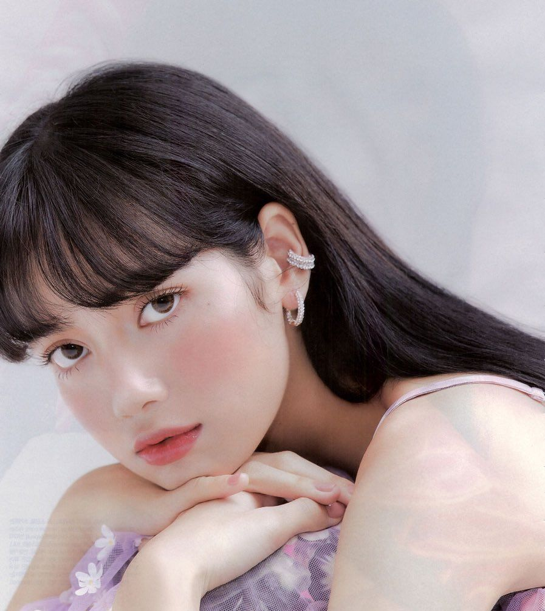
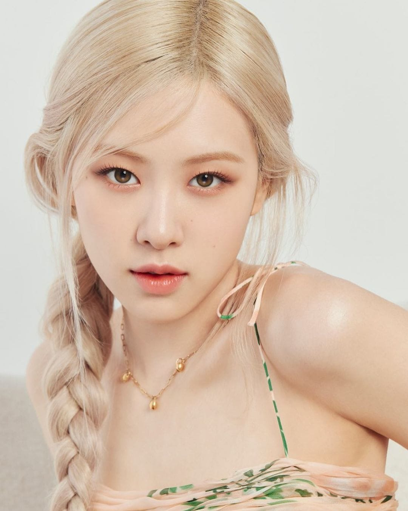

JENNIE RUBY JANE

Jennie Kim (Korean: 김제니; born January 16, 1996), known mononymously as Jennie, is a South Korean singer and rapper. Born and raised in South Korea, Jennie studied in New Zealand for five years before returning to South Korea in 2010. She debuted as a member of the girl group Blackpink, formed by YG Entertainment, in August 2016. In November 2018, Jennie made her debut as a solo artist with the single "Solo". The song was commercially successful, topping both the Gaon Digital Chart and Billboard's World Digital Songs chart. In 2023, she will be making her acting debut in the HBO series The Idol, under the stage name Jennie Ruby Jane.
LALISA MANOBAL
Lalisa Manobal (also spelled Manoban; born Pranpriya Manobal; March 27, 1997), known mononymously as Lisa, is a Thai rapper, singer and dancer based in South Korea. She is a member of the South Korean girl group Blackpink formed by YG Entertainment. Lisa made her solo debut with her single album Lalisa in September 2021. The album sold over 736,000 copies in its release week in South Korea, making her the first female artist to do so. The music video for its lead single of the same name recorded 73.6 million views on YouTube in first 24 hours of its release, becoming the most-viewed music video in the first 24 hours on the platform by a solo artist. The song earned Lisa two Guinness World Records as well as the first MTV Video Music Award ever won by a K-pop soloist.
ROSE
Roseanne Park (born 11 February 1997), known mononymously as Rosé (Korean: 로제), is a Korean-New Zealand singer and dancer[4][5] based in South Korea.[1] Born in New Zealand and raised in Australia, Rosé signed with South Korean label YG Entertainment following a successful audition in 2012 and trained for four years before debuting as a member of the girl group Blackpink in August 2016. In March 2021, Rosé made her solo debut with her single album R. The album sold 448,089 copies in its first week, the highest for a Korean female soloist. Lead single "On the Ground" was also a commercial success, topping the Billboard Global 200 and peaking in the top five domestically.
KIM JISOO

Kim Ji-soo (Korean: 김지수; born January 3, 1995), known mononymously as Jisoo, is a South Korean singer and actress. She is best known as a member of the best-selling K-pop girl group Blackpink, formed by YG Entertainment, in August 2016. Outside of her music career, she made her acting debut with a cameo role in the 2015 series The Producers and played her first leading role in the JTBC series Snowdrop (2021–22).